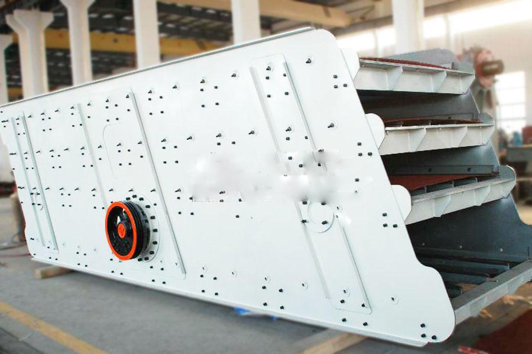
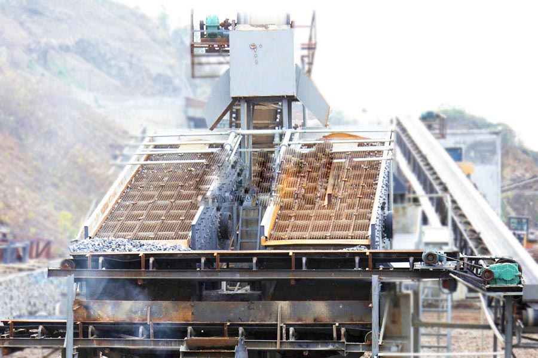

- Home >
- feeding screening >
- YKN Vibrating Screen

Construction waste crushing production line

Mobile construction waste crushing station for urban construction waste crushing.
YKN Vibrating Screen
YKN Vibrating Screen Product Introduction
YKN Vibrating Screen is a classic, universal and standardized screening equipment. This series of screening chassis trajectory circular, according to the application have light and heavy points, screening machine screen surface has a single and double forms two structures, can be used in mineral processing, building materials, electricity, light industry and chemical industry for all kinds of granular materials and small massive dry bulk solids classification.

YKN Vibrating Screen features Advantages
1, the processing capacity, high screening efficiency.
2, using a vibrator bearing thin oil lubrication, external block eccentric structure. Exciting force having large and small bearing load, temperature and low noise characteristics. (Bearing temperature less than 35 °).
3, the vibrator overall disassembly, maintenance, easy to replace, greatly reducing the maintenance cycle. (Replacement of the vibrator only 1 to 2 hours).
4, screen machine uses the entire board cold side, no welding, high strength and long service life. Coupled between the crossbar and the side plates using torsional shear strength bolts connection without welding, beam easy to replace.
5, vibration sieve machine with rubber springs, metal springs and ratio, with low noise, long life, over a total area of smooth vibrating sieve machine of the fulcrum dynamic load is small.
6, motor and exciter connection using flexible coupling, has a long service life of the motor impact is small.
YKN Vibrating Screen Technical Data
| Model | Mesh layers |
Screen Size (㎡) |
Mesh size (mm) |
The maximum feed size (mm) |
Processing capacity (m3/h) |
Vibration Power (r/min) |
Double amplitude (mm) |
Motor Power (kw) |
Screen surface inclination (°) |
Sieve size (mm) |
weight (kg) |
Dimensions (length×width×height)(mm) |
| 2YK1225 | 2 | 6 | 4-50 | 400 | 8-60 | 800-970 | 8 | 5.5 | 20 | 1200×2500 | 3500 | 2930×1860×870 |
| 3YK1225 | 3 | 9 | 4-50 | 400 | 10-70 | 800-970 | 8 | 5.5 | 20 | 1200×2500 | 3850 | 3070×1860×1210 |
| 2YK1230 | 2 | 7.2 | 4-50 | 400 | 12-78 | 800-970 | 8 | 7.5 | 20 | 1200×3000 | 4200 | 3430×1860×870 |
| 3YK1230 | 3 | 10.8 | 4-50 | 400 | 13-80 | 800-970 | 8 | 7.5 | 20 | 1200×3700 | 4600 | 3570×1860×1210 |
| 2YK1237 | 2 | 8.88 | 4-50 | 400 | 15-86 | 800-970 | 8 | 7.5 | 20 | 1200×3700 | 4600 | 4050×1860×870 |
| 3YK1237 | 3 | 13.22 | 4-50 | 400 | 16-90 | 800-970 | 8 | 7.5 | 20 | 1500×3500 | 5200 | 4270×1860×1210 |
| 2YK1535 | 2 | 10.5 | 5-50 | 400 | 20-125 | 800-970 | 8 | 11 | 20 | 1500×3500 | 5890 | 4120×2210×1230 |
| 3YK1535 | 3 | 15.75 | 5-50 | 400 | 21-125 | 800-970 | 8 | 11 | 20 | 1500×3500 | 6700 | 4360×2210×1610 |
| 2YK1545 | 2 | 13.5 | 5-50 | 400 | 22-150 | 800-970 | 8 | 15 | 20 | 1500×4500 | 6330 | 5120×2210×1230 |
| 3YK1545 | 3 | 20.25 | 5-50 | 400 | 22-150 | 800-970 | 8 | 15 | 20 | 1500×4500 | 6800 | 5360×2210×1610 |
| 4YK1545 | 4 | 27 | 5-50 | 400 | 22-155 | 800-970 | 8 | 18.5 | 20 | 1500×4500 | 7800 | 5930×2210×2060 |
| 2YK1548 | 2 | 14.4 | 5-50 | 400 | 22.5-162 | 800-970 | 8 | 15 | 20 | 1500×4800 | 6980 | 5420×2210×1230 |
| 3YK1548 | 3 | 21.6 | 5-50 | 400 | 22.5-162 | 800-970 | 11 | 15 | 20 | 1500×4800 | 7700 | 5660×2210×1610 |
| 4YK1548 | 4 | 28.8 | 5-50 | 400 | 22.5-162 | 800-970 | 8 | 18.5 | 20 | 1500×4800 | 8700 | 6230×2210×2060 |
| 2YK1848 | 2 | 17.28 | 5-80 | 400 | 25-206 | 750 | 8 | 15 | 20 | 1800×4800 | 9080 | 5420×2550×1420 |
| 3YK1848 | 3 | 25.92 | 5-80 | 400 | 32-276 | 750 | 8 | 18.5 | 20 | 1800×4800 | 9600 | 5660×2550×1780 |
| 4YK1848 | 4 | 34.54 | 5-80 | 400 | 32-285 | 750 | 8 | 22 | 20 | 1800×4800 | 11100 | 6290×2550×2160 |
| 2YK1854 | 2 | 19.44 | 5-80 | 400 | 32-312 | 800-970 | 8 | 18.5 | 20 | 1800×5400 | 10150 | 5960×2550×1420 |
| 3YK1854 | 3 | 29.16 | 5-80 | 400 | 32-312 | 800-970 | 8 | 22 | 20 | 1800×5400 | 10840 | 6260×2550×1780 |
| 4YK1854 | 4 | 38.88 | 5-80 | 400 | 32-336 | 800-970 | 8 | 30 | 20 | 1800×5400 | 12840 | 6830×2550×2160 |
| 2YK2160 | 2 | 25.2 | 5-100 | 400 | 50-475 | 970 | 8 | 30 | 20 | 2100×2600 | 11780 | 6720×2840×1530 |
| 3YK2160 | 3 | 37.8 | 5-100 | 400 | 50-475 | 970 | 8 | 30 | 20 | 2100×2600 | 12800 | 7030×2840×1910 |
| 4YK2160 | 4 | 50.4 | 5-100 | 400 | 50-497 | 970 | 8 | 37 | 20 | 2100×2600 | 14800 | 7300×2840×2380 |
| 2YK2460 | 2 | 28.8 | 5-100 | 400 | 65-550 | 970 | 8 | 37 | 20 | 2400×6000 | 15600 | 7020×3140×1530 |
| 3YK2460 | 3 | 43.2 | 5-100 | 400 | 70-620 | 970 | 8 | 37 | 20 | 2400×6000 | 17600 | 7300×3140×1910 |
| 4YK2460 | 4 | 57.6 | 5-100 | 400 | 80-680 | 970 | 8 | 45 | 20 | 2400×6000 | 19600 | 7600×3140×2380 |
| 2YK3072 | 2 | 14.3 | 5-100 | 400 | 200-700 | 750 | 8 | 22×2 | 20 | 3000×7200 | 23600 | 7200×4520×4184 |
| 3YK3072 | 3 | 21.4 | 5-100 | 400 | 230-800 | 750 | 8 | 22×2 | 20 | 3000×7200 | 25500 | 7200×4520×4684 |

YKN Vibrating Screen works
This series YKN Vibrating Screen is mainly composed of screen box, screen, vibrator and damping springs and other components. Vibrator mounted on the screen box side, rotated by a motor through V-belt, a centrifugal force of inertia, force the screen box vibrate. If the user no special requirements, YA and 2YA type for the textile screen surface, YAH type of punching the screen surface, the screen surface can meet all kinds of high efficiency, long life, no clogging requirements. This series of screen machine for the base installation. Adjust the screen surface inclination by changing the height of the spring bearing position to achieve. The motor can be mounted on the left side of the screen frame, and the frame can be mounted on the right side of the screen, such as no special requirements, the manufacturer according to the direction of movement of the right side of the material supply installation. YA Series Circular Vibrating Screen introduction of foreign technology manufacturing, with high efficiency, scientific and rational structure, the whole strength and rigidity and smooth running, durable, low noise, easy maintenance and so on.
Leave Me A Message, Now
If you have any questions regarding equipment prices, production line configuration or other problems, you can send a message to us, we will contact you soon.